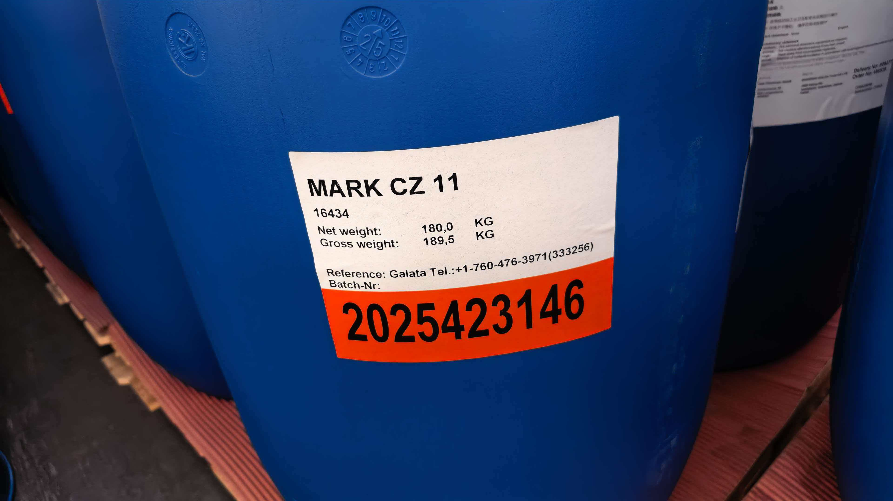
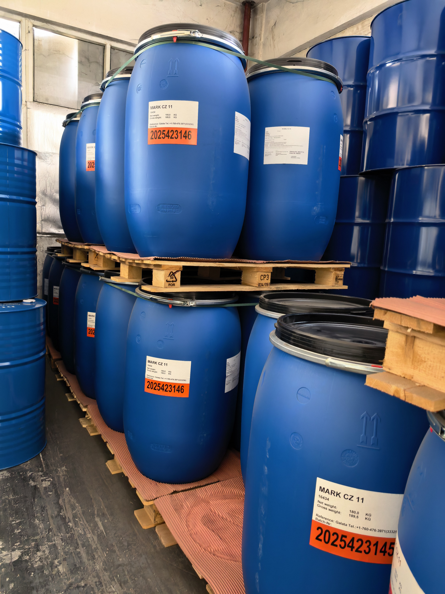

产品介绍
面向 PVC 配方的 MARK CZ 11
MARK CZ 11 为糊状钙锌稳定剂方向，可用于客户对 PVC 加工稳定性、环保体系和配方支持有要求的应用。产品选择需结合制品类型、加工温度与目标市场确认。
- 产品形态为白色、不透明糊状材料
- 原装包装净重 180kg，毛重信息以桶标为准
- 适合围绕 PVC 配方稳定需求进行选型沟通
- COA、TDS、MSDS 与批次资料可按询盘确认
环保钙锌稳定剂
MARK CZ 11 是用于 PVC 配方的钙锌稳定剂产品。上海慧罗可提供原装供应、上海仓库库存与批次资料沟通。

产品介绍
MARK CZ 11 为糊状钙锌稳定剂方向，可用于客户对 PVC 加工稳定性、环保体系和配方支持有要求的应用。产品选择需结合制品类型、加工温度与目标市场确认。
仓库实拍显示 MARK CZ 11 使用蓝色塑料桶原装包装，并以托盘方式存放。具体批号、到货状态和可用数量以当前报价为准。
上海仓库实拍
真实照片展示原装桶标签及仓库托盘库存，可用于客户进行包装、品牌与供应确认。


应用与沟通重点
稳定剂选型需要结合制品类型、加工温度、颜色要求、目标市场及配方体系。
用于关注加工稳定性与钙锌体系方案的 PVC 配方沟通。
白色、不透明糊状形态，样品与批次状态以实际供应为准。
建议先提供用途和配方需求，再确认样品、COA、TDS 与批次资料。
销售联系
请留下数量、用途、目的地及所需资料，我们会尽快回复。